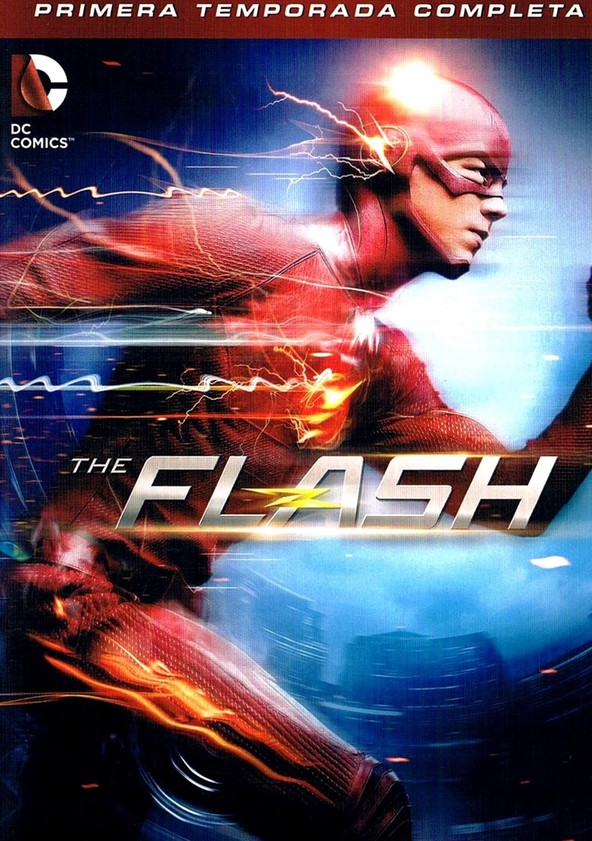
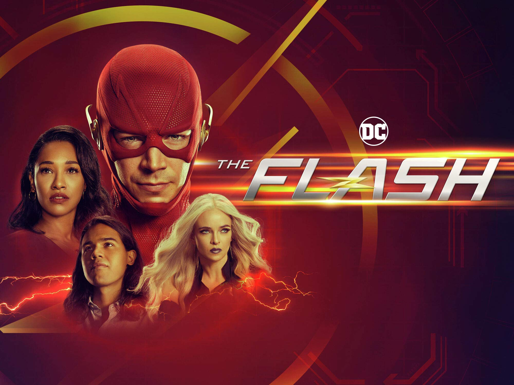

Flash es un personaje ficticio de los cómics de DC Comics. Es el alter ego de varios personajes, pero el más famoso y reconocido es Barry Allen, quien fue el segundo en portar el manto de Flash. El personaje tiene la habilidad de correr a velocidades increíbles, lo que le permite viajar en el tiempo, atravesar objetos sólidos y realizar hazañas increíbles. Flash es considerado uno de los personajes más icónicos de DC Comics y ha sido miembro de varios equipos de superhéroes, como la Liga de la Justicia.
Flash en la television/streaming
Temporada 1

Trailer:
La primera temporada de la serie de televisión "The Flash" sigue las aventuras de Barry Allen, un científico forense que adquiere la habilidad de correr a una velocidad sobrehumana después de ser alcanzado por un rayo durante un experimento en su laboratorio.
A medida que Barry descubre y aprende a controlar sus habilidades, comienza a utilizarlas para combatir el crimen en su ciudad natal, Central City, bajo la identidad de "Flash". A lo largo de la temporada, Barry se enfrenta a varios villanos, incluyendo a su némesis, el velocista llamado "Reverso Flash", quien tiene un oscuro pasado relacionado con la muerte de la madre de Barry.
Barry trabaja junto con un equipo de expertos en tecnología y ciencia, incluyendo a su amigo de la infancia, Cisco Ramón, y la genio de la computación, Caitlin Snow, para desarrollar nuevas tecnologías y estrategias para combatir el crimen.
Además de su lucha contra el crimen, Barry también está motivado por la búsqueda de respuestas sobre la muerte de su madre y la injusta acusación de su padre por el crimen. A medida que Barry investiga más, descubre una conspiración mucho más grande y peligrosa de lo que nunca imaginó.
La temporada concluye con una emocionante batalla entre Barry y Reverso Flash, en la que se revela la verdadera identidad del villano y se establece un nuevo status quo para Barry y su equipo.
Temporada 2
Trailer:
La segunda temporada de "The Flash" comienza con la llegada de un nuevo villano en Central City: Zoom, un velocista de otra Tierra que busca demostrar que es el más rápido de todos los universos.
A medida que Barry y su equipo trabajan para detener a Zoom, se presentan nuevos personajes y tramas, incluyendo la llegada de Jay Garrick, otro velocista que viene de la Tierra-2 para ayudar a Barry. Además, se introduce a la Dra. Caitlin Snow, que comienza a desarrollar sus habilidades como villana bajo el nombre de "Killer Frost".
La temporada también explora la relación entre Barry e Iris, y presenta un nuevo interés amoroso para él en la forma de la periodista Linda Park. Mientras tanto, Harrison Wells, quien se revela que es de la Tierra-2, tiene sus propios planes para Barry y su equipo.
A medida que avanza la temporada, se revelan sorprendentes secretos sobre la verdadera identidad de Zoom y la conexión que tiene con la familia West. El final de temporada es una batalla épica entre Flash y Zoom, que tiene repercusiones que cambian el curso de la serie para siempre.
Temporada 3
La tercera temporada de "The Flash" comienza con Barry lidiando con las consecuencias del final de la temporada anterior, que dejó al equipo enfrentando una realidad alternativa conocida como "Flashpoint". Barry se da cuenta de que su intento de salvar a su madre de la muerte ha cambiado drásticamente el curso del tiempo, y debe encontrar una manera de restaurar la línea de tiempo original.
A medida que Barry trabaja para arreglar sus errores, se presenta un nuevo villano en Central City, Savitar, que se revela como un futuro Barry que se ha vuelto loco. Además, los personajes de la Tierra-2 vuelven, incluyendo la versión malvada de Harrison Wells y la doble de Iris.
La temporada también presenta nuevos personajes, incluyendo a Julian Albert, un compañero de trabajo de CSI de Barry que desconfía de él, y H.R. Wells, un escritor de ciencia ficción de la Tierra-19 que se une al equipo como mentor y consejero.
Mientras tanto, la relación entre Barry e Iris enfrenta obstáculos, y la Dra. Caitlin Snow lidia con su transformación en Killer Frost. A medida que se acerca el enfrentamiento final entre Flash y Savitar, se revelan oscuros secretos sobre el pasado de Savitar y su conexión con el equipo Flash.
El final de la temporada presenta una batalla épica entre Flash y Savitar, que tiene consecuencias desgarradoras para algunos de los personajes principales. Además, se introduce un nuevo peligro que amenaza a todo el multiverso.
Temporada 4
La cuarta temporada de "The Flash" comienza con el equipo Flash tratando de recuperarse de la pérdida de un miembro del equipo, mientras enfrentan una nueva amenaza en Central City: los meta-humanos creados por la explosión del acelerador de partículas. Esta temporada también introduce a un nuevo villano, "El Pensador", un genio criminal que utiliza su intelecto para manipular y controlar a las personas.
El equipo Flash también se une con la organización gubernamental ARGUS para enfrentar a un peligroso grupo de villanos que amenazan la ciudad. Además, Caitlin Snow lidia con su doble personalidad, mientras que Cisco se enfrenta a su ex-novia, que se ha convertido en un villano meta-humano.
A lo largo de la temporada, Barry y el equipo también intentan encontrar una manera de liberar a un miembro del equipo de la cárcel, mientras que Barry y Iris planean su boda. Sin embargo, los planes se complican por la llegada de la hija de Barry y Iris del futuro, Nora West-Allen, quien ha venido para ayudar a sus padres a enfrentar una nueva amenaza.
El final de la temporada presenta una batalla épica entre el equipo Flash y El Pensador, y revela secretos sorprendentes sobre su verdadera identidad y su plan para controlar el multiverso. Además, el destino de uno de los personajes principales se deja en el aire y Nora enfrenta las consecuencias de sus acciones al alterar el tiempo.
Temporada 5
La quinta temporada de "The Flash" comienza con la llegada de una nueva amenaza en Central City, Cicada, un meta-humano que busca venganza contra los que tienen poderes sobrenaturales después de que su familia fue asesinada por un meta-humano. A medida que el equipo Flash trabaja para detener a Cicada, se introducen nuevos personajes, incluyendo a Nora West-Allen, la hija del futuro de Barry e Iris, que ha viajado en el tiempo para conocer a sus padres.
La temporada también explora la relación entre Barry e Iris mientras se enfrentan a los desafíos de ser padres, y presenta un nuevo interés amoroso para Cisco en la forma de Kamilla, una fotógrafa con una historia misteriosa.
A medida que la temporada avanza, se descubren oscuros secretos sobre la verdadera identidad de Cicada y su conexión con el pasado de Nora. Además, se presenta un nuevo villano en forma de Thawne, el archienemigo de Barry que ha regresado de la muerte para causar problemas. También se explora el Multiverso y se presentan varias versiones alternativas de los personajes principales.
El final de la temporada presenta una batalla épica entre el equipo Flash y Cicada, que tiene consecuencias sorprendentes para el futuro de la serie. Además, se establece un nuevo status quo para el equipo Flash y se plantean nuevas tramas para la siguiente temporada.
Temporada 6

La sexta temporada de "The Flash" comienza con la ausencia de Barry, quien se encuentra atrapado en la Fuerza de la Velocidad después de los eventos del final de la temporada anterior. Mientras tanto, el equipo Flash debe enfrentarse a una nueva amenaza en forma de Bloodwork, un científico que ha descubierto una forma de usar la sangre para obtener poderes sobrenaturales.
La temporada también introduce a Nash Wells, un explorador de la Tierra- Nash Wells que está buscando a su doppelganger, Harrison Wells, mientras que Cisco enfrenta una decisión difícil sobre su papel en el equipo. Además, la llegada de una nueva versión de la esposa de Barry, Iris, de una realidad alternativa, plantea nuevos desafíos para su relación y para el equipo en general.
A medida que la temporada avanza, el equipo Flash trabaja para rescatar a Barry de la Fuerza de la Velocidad y enfrentarse a varios villanos, incluyendo a Mirror Master y Eva McCulloch. La temporada también explora la historia de los velocistas y presenta varias versiones alternativas de Flash de otras realidades.
El final de la temporada presenta una batalla final contra Eva McCulloch y establece un nuevo status quo para el equipo Flash y la ciudad. Además, se establecen nuevas tramas y misterios para la siguiente temporada.
Temporada 7
La séptima temporada de "The Flash" comienza con el equipo Flash enfrentando las consecuencias de la Crisis en Tierras Infinitas, que ha alterado el Multiverso y ha dejado a Central City en un estado de caos. La temporada también presenta una nueva amenaza en forma de Mirror Master, cuyo poder se ha ampliado después de los eventos del final de la temporada anterior.
Además, la temporada explora la historia de los velocistas y presenta a una nueva versión de la Speed Force, que ha tomado la forma de la madre de Barry. También se presentan nuevos personajes, incluyendo a Chester P. Runk, un genio tecnológico con una conexión con la Fuerza de la Velocidad.
A medida que la temporada avanza, el equipo Flash trabaja para detener a Mirror Master y enfrentarse a otras amenazas, incluyendo a Godspeed y al villano misterioso conocido como "El Cazador". También se explora la relación entre Barry e Iris, que enfrentan sus propios desafíos mientras trabajan juntos para salvar la ciudad.
El final de la temporada presenta una batalla final contra El Cazador, cuya verdadera identidad es revelada, y establece un nuevo status quo para el equipo Flash. Además, se establecen nuevas tramas y misterios para la siguiente temporada, incluyendo la llegada de una versión alternativa de Caitlin Snow y la aparición de un nuevo villano en forma de Psych, un meta-humano con poderes mentales.